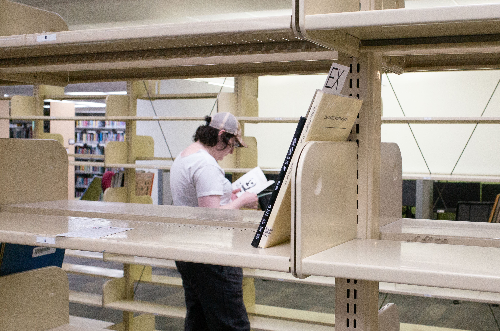

Towards an Archive of Visual Concepts
An exploration in reformatting and re-contextualizing using writing about and by experimental documentary filmmaker, Harun Farocki. Text was used as flexible and fragmented pieces that were rearranged to create new narratives, letting pull-quotes from different articles become a conversation between one-another, a screening schedule to become footnotes, essay headlines to become book chapters, a fragmented interview as bibliography, etc. The result is a loose reconstruction of information that lets the design process shape the story. Each layer was built-up without much consideration with what came before, allowing chance to drive the visual language.
Typefaces
Univers LT Pro
TeX Gyre Schola
Paper
Cougar Natural 70lb Text
Riso Colors
Hunter Green
Scarlet
Gold
Black
Year
2025